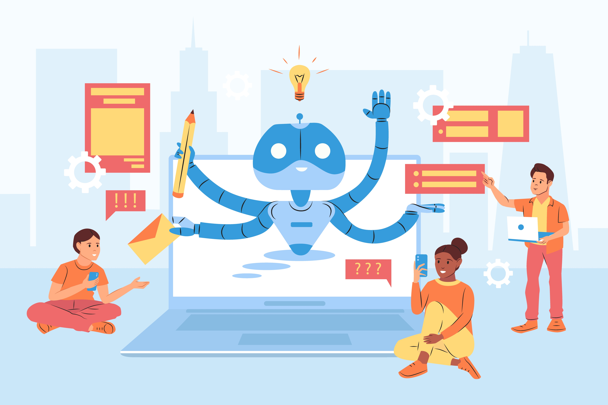

Introduction to AI in Software Testing
Key Takeaways
- AI is transforming software testing by automating repetitive tasks and enhancing test coverage
- Modern applications require AI-powered testing solutions to keep up with rapid development cycles
- Successful AI implementation requires careful planning and investment in the right tools
- The future of testing lies in autonomous systems and advanced analytics
In today's fast-paced digital world, software development is evolving at an unprecedented rate. With businesses striving to deliver high-quality applications faster than ever before, traditional software testing methods are often unable to keep up with the demands of modern software development. This is where Artificial Intelligence (AI) steps in as a game-changer. AI in software testing is revolutionizing the way we approach quality assurance, making it smarter, faster, and more efficient.
In this blog post, we will explore the role of AI in software testing, its benefits, challenges, and how it is transforming the future of software quality assurance. Whether you're a seasoned QA engineer or just starting your journey, this article will provide valuable insights into the power of AI in testing.
What is AI in Software Testing?
Artificial Intelligence (AI) refers to the simulation of human intelligence by machines, enabling them to perform tasks that typically require human cognition, such as learning, reasoning, problem-solving, and decision-making. When applied to software testing, AI automates repetitive tasks, analyzes vast amounts of data, identifies patterns, and predicts potential issues—all of which enhance the efficiency and accuracy of the testing process.
AI-powered tools in software testing leverage machine learning (ML), natural language processing (NLP), and deep learning algorithms to create test cases, execute tests, detect defects, and provide actionable insights. These tools can adapt to changes in the application under test, learn from past test results, and continuously improve their performance over time.
For example, imagine a scenario where an application undergoes frequent UI updates. Instead of manually updating test scripts every time, AI-powered tools can automatically adjust locators and test scripts, saving testers significant time and effort.
Why is AI Needed in Software Testing?
Traditional software testing methods, while effective in the past, face several limitations in today's agile and DevOps-driven environments. Here are some reasons why AI is becoming indispensable in software testing:
- Accelerated Development Cycles: With continuous integration and continuous delivery (CI/CD) pipelines, developers release updates frequently. Manual testing cannot keep pace with these rapid cycles, leading to delays and missed bugs.
- Complexity of Modern Applications: Applications today are highly complex, involving multiple integrations, APIs, microservices, and user interfaces. Testing such systems manually is time-consuming and error-prone.
- Increased Test Coverage: AI can analyze large datasets and generate test cases for edge cases that might be overlooked during manual testing, ensuring comprehensive coverage.
- Cost Efficiency: Automating repetitive tasks reduces the need for extensive human intervention, saving both time and resources.
- Improved Accuracy: AI eliminates human errors and ensures consistent and reliable test execution, reducing the likelihood of false positives or negatives.
- Proactive Issue Detection: Predictive analytics helps identify potential risks early in the development lifecycle, reducing rework and costs.
How Does AI Enhance Software Testing?
AI brings a wide range of capabilities to software testing, making it more intelligent and adaptive. Below are some key areas where AI makes a significant impact:
1. Test Case Generation
AI-powered tools can automatically generate test cases based on requirements, user stories, or historical data. For example, NLP algorithms can parse documentation and create relevant test scenarios without human input. This not only saves time but also ensures that no critical scenarios are missed.
2. Test Execution
AI automates the execution of test cases across different platforms, devices, and browsers. It can prioritize critical tests, rerun failed tests, and even self-heal broken tests caused by UI changes. Tools like Testim and Functionize excel in this area, offering dynamic test execution capabilities.
3. Defect Prediction and Analysis
By analyzing past defect patterns, AI can predict where new bugs are likely to occur. It also helps in root cause analysis by identifying the underlying factors contributing to failures. For instance, if certain modules consistently fail after code changes, AI can flag them for deeper inspection.
4. Visual Testing
AI enables visual testing by comparing screenshots of the application to detect UI inconsistencies, layout issues, or design flaws that may not be caught through functional testing alone. Tools like Applitools specialize in this domain, ensuring pixel-perfect UIs.
5. Performance Monitoring
AI continuously monitors application performance in real-time, identifying bottlenecks, latency issues, and scalability concerns. It can also simulate heavy loads to stress-test the system, ensuring robustness under peak conditions.
6. Regression Testing
AI streamlines regression testing by intelligently selecting only those test cases affected by recent code changes. This reduces the overall testing effort and ensures faster feedback loops. For example, instead of running 1,000 test cases, AI might identify just 100 that are relevant to the latest update.
7. Self-Healing Tests
One of the biggest challenges in automation testing is maintaining scripts when the application evolves. AI-based tools can "self-heal" by dynamically updating locators or adjusting scripts when minor changes occur in the application. This eliminates the need for constant manual updates.
Benefits of Using AI in Software Testing
The adoption of AI in software testing offers numerous advantages for organizations aiming to deliver high-quality products efficiently. Some of the key benefits include:
- Faster Time-to-Market: AI accelerates the testing process, enabling quicker releases without compromising quality.
- Higher Test Coverage: AI ensures comprehensive testing by covering a wider range of scenarios, including edge cases.
- Reduced Human Effort: Automation powered by AI minimizes manual intervention, allowing testers to focus on strategic activities like exploratory testing.
- Enhanced Accuracy: AI eliminates human errors and provides precise results, improving the reliability of test outcomes.
- Proactive Issue Detection: Predictive analytics helps identify potential risks early in the development lifecycle, reducing rework and costs.
- Scalability: AI can handle large-scale testing efforts seamlessly, whether it's testing across multiple devices or simulating thousands of users.
Challenges of Implementing AI in Software Testing
While AI has tremendous potential, implementing it in software testing comes with its own set of challenges:
- Initial Investment: Developing or integrating AI-powered testing tools requires significant upfront investment in terms of technology, infrastructure, and expertise.
- Data Quality: AI models rely heavily on data for training and decision-making. Poor-quality or insufficient data can lead to inaccurate predictions and flawed test results.
- Skill Gap: There is a shortage of skilled professionals who understand both AI and software testing, making it difficult for organizations to fully leverage AI capabilities.
- Tool Limitations: Not all AI-based testing tools are mature enough to handle complex use cases. Organizations must carefully evaluate available options before adoption.
- Ethical Concerns: The use of AI raises ethical questions about bias, transparency, and accountability, especially when decisions are made autonomously.
Popular AI-Powered Tools for Software Testing
Several AI-driven tools have emerged in recent years to support software testing efforts. Here are a few notable ones:
- Applitools: Focuses on visual AI testing to detect UI discrepancies.
- Testim: Uses ML to create stable and maintainable automated tests.
- Functionize: Employs AI for intelligent test creation, execution, and maintenance.
- Mabl: Offers end-to-end testing with built-in AI for anomaly detection.
- Selenium with AI Plugins: Integrates AI capabilities into Selenium-based frameworks.
These tools are designed to complement existing testing practices and provide additional value through AI-driven insights.
The Future of AI in Software Testing
As AI continues to advance, its role in software testing will only grow stronger. In the near future, we can expect:
- Autonomous Testing: Fully autonomous testing systems capable of designing, executing, and reporting tests without human intervention.
- Hyper-Personalization: AI will tailor testing strategies based on individual user behaviors and preferences.
- Advanced Analytics: More sophisticated AI models will provide deeper insights into application performance and user experience.
- Integration with DevOps: AI will become an integral part of DevOps pipelines, ensuring seamless collaboration between development and testing teams.
- Explainable AI: Efforts to make AI decisions more transparent and interpretable will gain momentum, addressing concerns about trust and accountability.
Conclusion
AI is no longer just a buzzword; it is a transformative force reshaping the landscape of software testing. By automating mundane tasks, enhancing test coverage, and providing predictive insights, AI empowers organizations to achieve higher levels of quality and efficiency. However, successful implementation requires careful planning, investment in the right tools, and upskilling of teams.
As software development becomes increasingly complex, embracing AI in testing is not just an option—it's a necessity. By leveraging AI, businesses can stay ahead of the competition, meet customer expectations, and deliver flawless applications that stand the test of time.
Are you ready to harness the power of AI in your software testing journey? Start exploring the possibilities today!
If you'd like to dive deeper into specific AI tools or techniques, feel free to leave a comment below. Let's discuss how we can collectively embrace the future of testing!
Join Our Community of QA Professionals
Get exclusive access to in-depth articles, testing strategies, and industry insights. Stay ahead of the curve with our expert-curated content delivered straight to your inbox.
Nikunj Mistri
Founder, QA Blogs